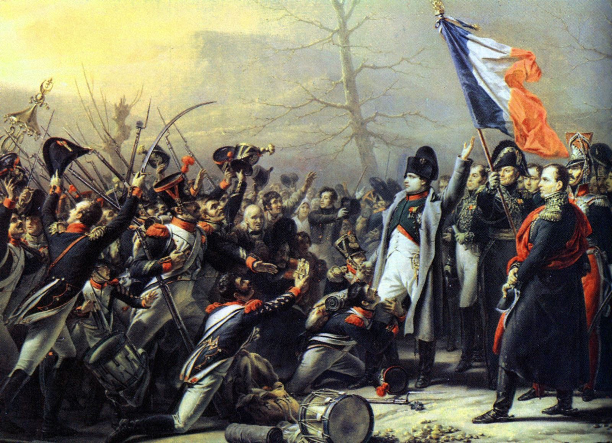

Trước khi nói đến câu chuyện về sự kiện dị thường nhất trong cuộc đời của Napoléon, cần chú ý đến điều sau đây. Sau khi đến đảo Elba, trong những ngày đầu, rõ ràng Hoàng Đế không còn ý đồ gì nữa, ông ta cho rằng cuộc đời chính trị của ông đã hết và đã chỉ có ý định viết về lịch sử triều đại của mình như ông đã hứa hẹn. Ít ra đó cũng là ý nghĩ nảy ra ở Napoléon suốt trong sáu tháng đầu tiên sống trên đảo. Ông sống yên tĩnh và bình thản. Ở những quận miền Nam nước Pháp, khi Napoléon đi qua, bọn Bảo Hoàng đã tỏ thái độ vô cùng thù địch và có khi suýt gây nguy hiểm đến tính mạng ông, nhưng rồi ngày 3 tháng 5 năm 1814, ông đã tới đảo Elba.
Từ đây, Napoléon sống trên mảnh đất hiu quạnh, giữa những dân cư xa lạ đã đón người thủ lĩnh mới của họ với thái độ cung kính nhất. Mùa xuân năm 1811, đúng tròn ba năm trước ngày Napoléon đặt chân lên đảo Elba, Napoléon đã tiếp tướng Wrede ở cung điện Tuileries lúc này đang vào giai đoạn chuẩn bị công khai cho chiến dịch nước Nga - Wrede đã cung kính đánh bạo đưa ra ý kiến không nên mở chiến dịch nước Nga, thì Napoléon đột ngột ngắt lời Wrede rằng “ba năm nữa, ta sẽ làm bá chủ hoàn cầu”. Sau cuộc gặp gỡ ấy ba năm, “đại đế quốc” sụp đổ, còn Napoléon trị vì một hòn đảo rộng 223km vuông với 3 thị trấn và vài ngàn dân. Số mệnh đã đưa Napoléon trở về nơi chôn rau cắt rốn: Đảo Elba cách đảo Corsica chừng 50km. Hồi tháng 4 năm 1814, đảo Elba vẫn thuộc quyền công tước Toscany, một trong những chư hầu Ý của Napoléon, nhưng theo yêu cầu của phe Liên Minh, công tước đã nhường lại cho ông Hoàng Đế thất thế. Napoléon đã đi xem xét lãnh địa của ông, tiếp xúc với nhân dân và hình như có ý định ở lâu dài trên đảo. Thỉnh thoảng gia đình ông đến thăm: Mẹ ông, bà Letizia, em gái ông, quận chúa Pauline Borghese. Bà bá tước Waleska, người từng quan hệ mật thiết với Napoléon hồi ở Błonie và đã yêu Napoléon suốt đời, cũng đến thăm. Marie Louise và con trai không đến, một phần vì Hoàng Đế nước Áo không cho phép, vả chăng, Marie Louise cũng không tha thiết lắm với việc gặp lại chồng. Những người Pháp viết tiểu sử Napoléon thường công kích sự thờ ơ và phụ bạc của Marie Louise, họ quên hẳn mất rằng năm 1810, khi Napoléon cầu hôn Marie Louise thì ông ta cũng như mọi người, có ai đếm xỉa đến việc Marie có ưng thuận hay không. Cũng cần nhắc lại bức thư Marie viết ở Ausfern gửi cho một người bạn gái thân hồi tháng 1 năm 1810: “Từ khi Napoléon ly dị Joséphine, mỗi lần giở tờ nhật báo Frankfurt, mình chỉ muốn tìm tên người vợ mới của Napoléon, và thú thực là sự chậm trễ ấy đã gây cho mình nhiều lo ngại. Mình chỉ còn biết phó thác số phận mình trong tay đấng tối cao... Nhưng nếu điều bất hạnh chẳng tha mình, mình sẵn sàng hi sinh hạnh phúc riêng cho lợi ích quốc gia”. Vị hôn thê và người vợ mai sau của ông Hoàng Đế đã suy tính như vậy đó về sự cầu hôn đang đe dọa nàng. Đế quốc Napoléon sụp đổ tất nhiên là sự giải phóng đối với Marie. Hoàng Đế cũng không được gặp người vợ đầu tiên mà ông đã yêu tha thiết trước khi ly dị, Joséphine đã chết ở Malmaison ngày 29 tháng 5 năm 1814, sau khi Napoléon đến đảo Elba vài tuần lễ. Tin đó làm cho Hoàng Đế Napoléon ủ dột và trầm lặng trong mấy ngày liền. Những ngày tháng đầu tiên đã trôi qua như vậy, lặng lờ và đơn điệu trên hòn đảo Elba. Hoàng Đế thản nhiên trước việc đời và cũng không giấu diếm ai bản chất tình cảm của mình. Ông trâm ngâm suy tưởng hàng tiếng đồng hồ liền. Chỉ từ mùa thu năm 1814, và đặc biệt là từ tháng 11, Napoléon mới bắt đầu chú ý đến tất cả những điều người ta kể lại tình hình nước Pháp và Hội Nghị Vienna vừa khai mạc vào hồi ấy. Không thiếu gì người cung cấp tin tức. Từ hải cảng Piombino ở Ý, cách đảo Elba không quá 12 km, và trực tiếp từ nước Pháp bay đến cho Napoléon biết rõ rằng, sau khi trở lại ngôi báu, bọn Bourbon và quần thần của chúng đã tỏ ra không có chút uy tín nào và ngu xuẩn đến mức không ai tưởng tượng được. Talleyrand, kẻ thông minh nhất trong bọn đã phản bội Napoléon và đã góp phần khôi phục dòng họ Bourbon năm 1814, ngay lúc đó đã nói rằng: “Bọn chúng vẫn hệt như xưa”. Trong một cuộc hội đàm với Caulaincourt, Aleksandr đệ nhất cũng đã cùng chung ý nghĩ như vậy và nói rằng bọn Bourbon không chịu thay đổi gì cả và là những kẻ không thể làm cho thay đổi được. Bản thân lão già tê thấp Louis XVIII là một kẻ rất thận trọng, nhưng em hắn, bá tước d’Artois và mấy đứa con của y là công tước Angoulême và Berry, cũng như cả cái tập đoàn lưu vong quay trở về cùng với dòng họ Bourbon đều xử sự tuồng như chưa hề có cuộc cách mạng nổ ra và chưa hề có Napoléon ở trên đời. Bọn chúng rất vui lòng quên đi và tha thứ cho những tội lỗi của nước Pháp, với điều kiện là đất nước ấy phải tự nguyện chịu đau khổ, trở về với lòng trung quân và trật tự chế độ xã hội cũ. Dù có ngu ngốc, bọn chúng cũng phải thừa nhận rằng không thể nào thủ tiêu được những cơ quan và tổ chức bất khả xâm phạm do Napoléon đã xây dựng như: Quận Trưởng ở các quận, tổ chức các bộ, bộ máy cảnh sát, hệ thống tài chính, Bộ Luật Napoléon, toà án, nghĩa là toàn bộ sự nghiệp của Napoléon, và thậm chí cả huân chương Bắc Đẩu, bộ máy cai trị, tổ chức quân đội, tổ chức các trường đại học, cao đẳng và trung cấp, điều ước hòa giải với Giáo Hoàng, tóm lại là toàn bộ cơ cấu Nhà Nước của Napoléon, có khác thì chỉ là trước kia cái Nhà Nước ấy do một ông vua chuyên chế đứng đầu thì nay do một ông vua “lập hiến”. Nhà vua bị thúc ép phải ban bố một hiến pháp, đặc biệt là do Aleksandr khẩn thiết yêu cầu, vì Nga Hoàng tin chắc rằng nếu không có hiến pháp, dòng họ Bourbon sẽ không thể đứng vững được. Theo hiến pháp ấy, chỉ có một số rất ít người giàu có được quyền bầu cử (chừng 10 vạn người trong số 28, 29 triệu nhân dân Pháp). Những kẻ chủ trương phục hồi toàn vẹn chế độ cũ đã tức tối. Kẻ chiếm đoạt ngôi vua thì đã trị vì chuyên chế trong ngần ấy năm trời, mà nay nhà vua chính thống, nhà vua do Thượng Đế đã sắp đặt, lại bị hạn chế về quyền lực ư? Bọn chúng còn bất mãn vì nhiều lý do khác nữa. Ngay từ những ngày đầu phục hưng, bọn chúng đã không ngừng la ó đòi trả lại những đất đai của chúng đã bị Cách Mạng tịch thu và bán đấu giá cho nông dân và tư sản. Đương nhiên, chẳng có kẻ nào dám làm việc đó, song những yêu cầu ấy của bọn chúng cũng đủ làm cho nông dân lo lắng cực độ và nông thôn bị náo động dữ dội. Tầng lớp tăng lữ, hoàn toàn đồng tình với bọn lưu vong cũ, đã đi đến chỗ mạt sát những nông dân đã mua được tài sản quốc gia, ở ngay trên toà giảng, chúng nói họ sẽ phải hiến mình cho cơn thịnh nộ của Chúa Trời và nanh vuốt của chó ngao, như kẻ phản Chúa Jezabel. Bọn quý tộc lưu vong trở về đã tỏ ra ngạo ngược hơn bao giờ hết. Nông dân bị đánh đập nhưng không được tòa án can thiệp, xét xử. Những người có thiện chí nhất trong triều đình Louis XVIII tỏ ra thất vọng trước tình hình đang diễn ra ở nông thôn và nhìn thấy rõ những tin đồn đại về việc tước lại ruộng đất đang làm cho nông dân bối rối hoang mang sâu sắc đến cùng cực, nhưng họ chẳng thể làm gì được. Còn như giai cấp tư sản, trong những ngày đầu tiên sau khi đế chế sụp đổ, thì bọn họ nói chung cảm thấy dễ chịu, họ có thể hy vọng được rằng chiến tranh sẽ chấm dứt, chấm dứt cả nạn trưng binh (trong những năm cuối cùng của đế chế, họ đã không mua được người đi lính thay cho con em họ như trước kia nữa, vì thiếu đàn ông, hy vọng bắt tay vào việc chấn hưng thương nghiệp, người ta cũng thoáng thấy được rằng chế độ độc tài gây nhiều trở ngại cho việc buôn bán làm ăn cũng sẽ chấm dứt, còn tầng lớp đại tư sản công nghiệp thì từ những năm 1813 - 1814, bản thân nó cũng đã không còn coi đế quốc rộng lớn là điều kiện cần thiết cho sự phồn vinh của nó nữa.
Mới vài tháng sau khi nền đế chế sụp đổ và cuộc phong toả lục địa kết thúc, số lớn giai cấp tư sản thương nghiệp và công nghiệp đã la ó ầm ĩ: Chính quyền Bourbon không dám tính cả đến việc đầu tiên là kiên quyết mở một chiến dịch thuế quan chống người Anh, những kẻ đã góp phần tích cực trong việc đánh đổ Napoléon. Nếu trong giai cấp tư sản còn có một số đã đón dòng họ Bourbon với một chút thiện cảm nào đó tương đối lâu dài, thì phải tìm giới trí thức trong số những người làm nghề tự do: Luật sư, thầy thuốc, nhà báo...v.v. Sau nền chuyên chế sắt thép của Napoléon, bản hiến pháp cực kỳ ôn hòa của Louis XVIII ban bố là một ân huệ vô giá đối với họ. Số sách báo tăng lên, đó là điều không thể có được dưới thời Napoléon. Nhưng chẳng bao lâu, những tầng lớp trí thức ấy, môn đệ của những nhà văn và những nhà triết học của Thế Kỷ Ánh Sáng, được đào tạo trong trường phái tư tưởng tự do, đã phẫn nộ vì sự lộng hành của của tầng lớp tăng lữ Bourbon cũng như trong bộ máy chính quyền và đời sống xã hội. Sự ngược đãi những người có tư tưởng Voltaire đã diễn ra ác liệt khắp nơi. Bọn cuồng tín hoành hành dữ dội nhất ở các tỉnh, nơi mà bọn cầm quyền mới đều do nhà thờ chọn lựa và giới thiệu. Càng ngày địa vị của bọn Bourbon và bè lũ càng lung lay.
Không phục hưng được chế độ cũ, không thủ tiêu được luật pháp ban bố dưới thời Cách Mạng và Đế Chế, cũng không dám đụng đến cái cơ đồ do Napoléon đã xây dựng, bọn chúng bèn khiêu khích nông dân và tư sản bằng những lời tuyên bố, những điều luật, những hành động điên khùng và thái độ ngạo ngược. Những sự dọa nạt và khiêu khích của chúng chỉ làm cho toàn bộ tình hình chính trị càng thêm không ổn định. Riêng nông dân bị rối loạn. Một tình trạng khác nữa rất nghiêm trọng: Những binh lính tuyển mộ hàng loạt và số lớn các sĩ quan đều coi dòng họ Bourbon do bên ngoài đưa vào là một tai hại bất đắc dĩ mà họ phải nhẫn nhục âm thầm chịu đựng. Thời gian càng xoá nhòa ấn tượng của những thương tích và chết chóc, càng chôn vùi dần ký ức những năm tàn sát đầy hãi hùng ghê rợn của chiến dịch Nga. Những cảnh tượng bi thảm ấy mờ nhạt dần và chìm dần trong quên lãng, nhường chỗ cho hình ảnh người thủ lĩnh đã dẫn họ đến những chiến công chưa từng thấy và đã đem đến cho họ một vinh quang bất diệt. Trước mắt họ người ấy không những chỉ là một người anh hùng lừng lẫy, một nhà chỉ huy vĩ đại, người chủ của nửa quả đất, mà còn là người bạn chiến đấu của họ, là “Chú Cai Bé Nhỏ", là người đã gọi họ bằng chính cái tên họ, đã véo tai giật râu họ để tỏ lòng ân cần thân thiết. Hình như họ luôn cho rằng Napoléon yêu mến tất cả bọn họ, như tất cả bọn họ đã yêu mến Napoléon. Ông Hoàng đã luôn luôn khéo biết nuôi dưỡng cái ảo tưởng ấy. Hàng ngũ sĩ quan không tỏ thái độ thù địch với bọn Bourbon như binh lính. Dẫu sao thì cũng có một bộ phận trong bọn họ đã mệt mỏi rã rời vì chiến tranh và khao khát nghỉ ngơi. Nhưng bọn Bourbon đã không tin họ về mặt chính trị, và cũng vì không cần dùng đến một số lượng sĩ quan lớn như vậy, nên trong một lúc, chúng đã thải hồi một số lớn sĩ quan bằng cách cho về hưu. Những người còn lại thì căm ghét và khinh bỉ những sĩ quan trẻ xuất thân trong giai cấp quý tộc Bảo Hoàng được đưa lên làm cấp chỉ uy của họ. Lá cờ trắng mà bọn Bourbon thay thế lá cờ ba sắc của quân đội Cách Mạng và quân đội của ông Hoàng Đế cũng đã là một nguyên nhân làm họ tức giận. Với binh sĩ của Napoléon, lá cờ trắng ấy trước kia là biểu tượng của những kẻ phản bội lưu vong mà họ đã bắt gặp và đánh bại trong các cuộc chống ngoại xâm. Cũng vẫn dưới lá cờ ấy, bọn chúng đã trở về, khôi phục chế độ cũ dưới sự che chở của lưỡi lê Nga, Áo và Phổ, tất cả kẻ phản bội chống cách mạng ấy lại còn toan cướp lại ruộng đất của nông dân, những bức thư từ làng quê đã cho họ biết vậy... “Hiện nay Người ở đâu? Bao giờ Người quay về?”. Những câu hỏi ấy được đặt ra ở các làng mạc doanh trại sớm hơn là trong các tầng lớp nhân dân khác. Napoléon biết rõ điều đó. Và ông cũng còn biết những việc khác nữa.
Những tin tức về tình hình diễn biến của Hội Nghị Vienna đã đến với Napoléon bằng con đường nước Ý thông thường bằng báo chí. Ông theo dõi các vua chúa và các nhà ngoại giao đang cố gắng dàn xếp để chia nhau món gia tài kếch xù của ông mà chưa ngã ngũ, và ông thấy rõ rằng những đất đai do ông chinh phục được nay bị cắt ra khỏi nước Pháp đang làm cho Khối Liên Minh ngày nọ thèm thuồng và tranh chấp nhau. Ông biết nước Anh và nước Áo chống lại nước Nga và nước Phổ chỉ vì miếng mồi xứ Saxony và nước Ba Lan. Sự thống nhất hành động gữa các cường quốc Châu Âu để chôn vùi cái đại đế quốc của Napoléon vào năm 1814, nay không còn nữa. Tháng 12 năm 1814, trong khi đi dạo ở vùng lân cận lâu đài của mình ở Portoferraio, thủ phủ đảo Elba, Napoléon bỗng dừng lại trước mặt người lính cận vệ đang canh gác. Đó là người lính cận vệ trong tiểu đoàn cựu cận vệ được phe Liên Minh cho đi theo Napoléon: “Này! Anh lính già, buồn đấy à?”, “Tâu Bệ Hạ, không ạ, nhưng không phải ở đây lúc nào cũng vui”. “Anh lầm rồi, phải biết tùy thời cơ chứ”, rồi Napoléon đặt vào bàn tay người lính một đồng tiền vàng và vừa đi vừa ngâm nga: “Sẽ chẳng như thế nhiều mãi đâu”. Không biết những lời nói ấy hoặc những lời có ý tứ tương tự thốt ra từ miệng Napoléon có bay đến tai ai không. Chỉ biết rằng Metternich, Louis XVIII và chính phủ London đã rất lo lắng về việc Napoléon có mặt ở một địa điểm quá gần bờ biển nước Pháp. Người ta tính chuyện chuyển Napoléon đến một nơi nào đó xa hơn. Ngay cả ở trên hòn đảo nhỏ ấy, Napoléon vẫn đáng sợ. Có tin đồn rằng người ta định sai người đi ám sát ông. Bọn Bourbon và phe cánh của chúng càng chồng chất lên nước Pháp những chuyện ngu dại bao nhiêu thì đám vua chúa và chính khách ngoại giao ở Vienna càng lo lắng. Nhưng từ đảo Elba bắt đầu bay tới những tin tức mà người ta rất yên tâm, hoàn toàn trái ngược với những tin đồn đại nguy cấp kia. Hầu như ông Hoàng Đế không bước chân ra khỏi nhà, ông ta sống bình thản và cam chịu bước đường của định mệnh, chuyện trò ân cần với Campbell, đại diện của nước Anh, và nói với Campbell rằng từ nay chẳng có gì hấp dẫn được ông bằng hòn đảo bé nhỏ của ông. Trong buổi dạ hội đêm 7 tháng 3 năm 1815, ở triều đình nước Áo, người ta đã tổ chức một cuộc khiêu vũ để chiêu đãi các vị vua chúa và các vị đại diện của các cường quốc Châu Âu đang họp ở Vienna. Cuộc vui đang tưng bừng hứng thú nhất thì bỗng nhiên các quan khách thấy đám cận thần của Hoàng Đế Francis lộ vẻ bối rối cực độ, mặt mày xanh xám, hốt hoảng, các đình thần chạy vội xuống cầu thang chính, tưởng như có cháy trong cung điện. Chỉ trong nháy mắt, cái tin không ngờ sau đây đã bay khắp các cung, phòng, làm mọi người hốt hoảng rụng rời bỏ cuộc khiêu vũ: Một đạo tin vừa báo rằng Napoléon đã rời đảo Elba, đổ bộ lên đất Pháp và tay không khí giới, tiến thẳng về Paris.
Ngay từ những ngày đầu tháng 2 năm 1815, quyết định trở về nước Pháp và phục hưng đế chế đã bắt đầu được xác lập rõ rệt trong đầu óc Napoléon. Ông chẳng hề nói cho ai biết ông đã đi đến quyết định đó như thế nào. Có lẽ chỉ đến cuối năm 1814 và những tháng đầu năm 1815, ông mới thực sự tin chắc toàn thể quân đội vẫn trung thành với ông chứ không phải chỉ riêng có đội quân cận vệ, và bên cạnh những Thống Chế một lòng một dạ như Davout, còn có những tướng lĩnh như Exelmans, còn có những sĩ quan đã về hưu hoặc đang tại ngũ, chỉ thấy căm giận và khinh bỉ dòng họ Bourbon và tư tưởng của họ cũng hoàn toàn thống nhất với quân đội, Napoléon cũng tin chắc rằng trong số những Thống Chế, vì khao khát được nghỉ ngơi và vì mệt mỏi chán chường cuộc đời chiến tranh liên miên nên đã tình nguyên phục vụ dòng họ Bourbon, có nhiều người nay tức giận và bất bình Louis XVIII cũng như em hắn và lũ cháu hắn. Napoléon cũng biết rõ và rất quan tâm theo dõi tình trạng tư tưởng của nông dân và tình hình nhốn nháo ngày càng nghiêm trọng ở nông thôn. Một bản báo cáo đã thúc đẩy thêm sự việc. Vào giữa tháng 2 năm 1815, Napoléon, được gặp gỡ Fleury de Chabulon, một viên chức trẻ tuổi của đế chế, thay mặt Maret, cựu Bộ trưởng Bộ Ngoại Giao của Napoléon, hiện đang ở Pháp, đến đảo Elba để đưa tin tức cho Napoléon. Công tước Bassano đã trao cho Fleury nhiệm vụ báo cáo chi tiết với Hoàng Đế về sự bất mãn của toàn dân và hành động vô sỉ của bọn lưu vong hồi hương, và nói với Hoàng Đế rằng trong thâm tâm hầu hết quân đội chỉ thừa nhận có một ông chúa, đó là Napoléon, và họ không thể chịu đựng được Louis XVIII cũng như những tên Bourbon khác. Bản báo cáo thật bổ ích, nhưng thật ra, ngay trước khi phái viên của công tước Bassano tới. Napoléon, cũng đã hiểu rõ thực chất của tình hình. Song, dẫu sao, quyết tâm của Napoléon, cũng được xác định sau cuộc gặp gỡ ấy. Giữa thời gian ấy, bà mẹ Napoléon, cũng đang ở đảo với con; Letizia là một người đàn bà thông minh, quả quyết và có chí khí. Napoléon kính trọng bà hơn bất cứ ai trong gia đình. Chính bà là người đầu tiên được Napoléon, thổ lộ tâm tình: “Con không thể chết ở hòn đảo này được đâu và con cũng không thể kết thúc cuộc đời con bằng sự nghỉ ngơi yên tĩnh chẳng xứng đáng với con". Napoléon nói với mẹ, “Quân đội đang trông đợi con. Tất cả đều mong mỏi con về để chạy xổ đến với con. Chắc chắn là con có thể gặp những trở lực không lường trước trên con đường con đi, có thể con sẽ gặp một tên sĩ quan trung thành với dòng họ Bourbon, nó sẽ ngăn chặn bước đi của con và lúc đó, sau vài tiếng đồng hồ, con sẽ ngã xuống. Nhưng cái kết thúc ấy tốt hơn là chuỗi ngày dài đằng đẵng trên hòn đảo này với tương lai đã vạch là cái chết. Vì vậy mà con muốn đi lao mình vào may rủi một lần nữa. Ý mẹ thế nào, mẹ thân yêu của con?“ Letizia vô cùng sửng sốt trước câu hỏi bất ngờ ấy mà bà không thể trả lời ngay được. “Con hãy để cho mẹ suy nghĩ một lát bằng tình cảm cảm của người mẹ và rồi sau đó mẹ sẽ cho con biết ý mẹ”. Sau một lúc lâu im lặng, bà nói: “Đi đi, con trai mẹ, đi đi, và theo đuổi định mệnh của con. Có lẽ con sẽ thất bại khi mưu toan của con tan vỡ thì cái chết sẽ sát bên con. Nhưng con không thể ở lại được đây, đó là điều làm mẹ đau đớn. Mà cũng cầu mong rằng Thượng Đế đã từng che chở cho con trong bao nhiêu chiến trận thì nay Người hãy còn che chở cho con một lần nữa”. Rồi bà ôm chặt lấy con trai.
Ngay sau khi chuyện trò xong với mẹ, Napoléon liền vời các tướng lĩnh đã theo ông ra ở đảo Elba: Drouot, Bertrand và Cambronne. Hai viên tướng sau đã hào hứng đón nhận ý định của Napoléon. Chỉ có Drouot lo ngại rằng sẽ không đạt được thắng lợi, Napoléon cho Drouot biết từ nay ông không còn ý định gây chiến chiến tranh và trị vì chuyên chế, ông chỉ muốn làm cho nhân dân Pháp trở thành một dân tộc tự do. Đó là một đặc điểm trong đường lối chính trị mới của Napoléon. Ông đã dùng nó để bắt đầu công cuộc của mình, nếu không phải với ý định biến nó thành hành động thực tế thì ít ra cũng là với ý định sử dụng nó về phương diện chiến thuật. Napoléon lập tức hạ mệnh lệnh và ra chỉ thị cho họ: Không phải ông đi chinh phục nước Pháp bằng vũ lực, ý định của ông là trở về Pháp, đổ bộ lên đất Pháp, công bố mục đích chính trị của mình và đòi lại ngôi Hoàng Đế. Ông tin tưởng mãnh liệt vào uy tín cá nhân của ông đến nỗi ông cho rằng đất nước sẽ thần phục ông ngay từ phút đầu, không xung đột cũng không hề có ý định kháng cự lại ông. Nên chi, không có lực lượng vũ trang cũng sẽ không gặp trở ngại gì. Ông đã có một số khá người trong tay để chống lại những bất trắc xảy ra có thể làm hỏng việc trước khi ông được mọi người biết rằng đã tới đất liền và trước khi ông được đứng trước một quân đội thực sự. Sáu trăm binh sĩ của đội cựu cận vệ với hơn một trăm kỵ binh, thế là ông đã có một đội quân 724 người, và như vậy là quá đủ để đảm bảo an toàn tính mạng cho Napoléon trong những phút đầu tiên; còn sau đó chẳng còn gì đáng sợ nữa. Ngoài ra, một đội kỵ binh gồm trên 300 người thuộc trung đoàn 35 mà xưa kia chính Napoléon đã phái ra để bảo vệ đảo, cũng thuộc quyền chỉ huy của ông. Tổng cộng chừng 1.100 người, và Napoléon đã quyết định đem đi tất cả. Để vượt biển, Napoléon có vài chiếc tầu nhỏ chờ sẵn ở cảng. Công tác chuẩn bị được tiến hành rất bí mật. Napoléon hạ lệnh cho ba tướng đến ngày 26 tháng 2 phải chuẩn bị xong xuôi về mọi mặt. Buổi chiều hôm ấy, 1.100 binh sĩ ở Portoferraio bất thình lình được dẫn ra cảng và xuống tàu cùng với toàn bộ quân trang quân dụng. Họ không hề biết lý do chuyến đi cũng như nơi họ sẽ tới, vì người ta đã không hề nói hé ra, nhưng ngay trước khi bước chân lên mạn tàu họ cũng đoán ra được, và khi ông Hoàng Đế cùng ba viên tướng và vài viên sĩ quan cựu cận vệ ra cảng, họ hoan hỉ đón chào ông. Vừa từ biệt con, bà Letizia vừa thổn thức tuyệt vọng. Khi mọi người đều đã xuống tàu, cái hạm đội bé nhỏ ấy đã nhổ neo vào hồi 7 giờ tối và thuận gió, lướt về phía Bắc. Tàu buồm của người Anh và của hải quân hoàng gia Pháp thường xuyên đi lại trên hải phận Elbe, đó là nguy cơ đầu tiên. Một chiến hạm Pháp đi sát qua, một sĩ quan trên hạm giơ loa cất tiếng hỏi viên thuyền trưởng của Napoléon: “Ông vĩ nhân ấy có khoẻ không?”. “Khoẻ lắm!”, người thuyền trưởng đáp. Và cuộc chạm trán ấy kết thúc. Chiếc chiến hạm của nhà vua không trông thấy được binh sĩ của Napoléon ẩn kín trong tàu. May mắn thay, cũng không phải gặp tàu Anh nữa. Cuộc vượt biển kéo dài gần ba ngày, vì gió đã yếu dần. Ngày 1 tháng 3 năm 1815, hồi ba giờ chiều, hạm đội vào vịnh Juan, gần mũi Antibes. Hoàng Đế lên bờ và hạ lệnh cho đổ bộ ngay. Nhân viên đồn hải quan chạy tới và khi nhận ra là Napoléon, họ đã vẫy mũ và reo hò vang dậy để chào mừng ông Hoàng Đế. Napoléon cử Cambronne và mấy người lính đến Cannes để kiếm lương binh. Lương thực được tiếp tế đến ngay. Bỏ lại ở bờ biển bốn khẩu pháo đem từ Portoferraio tới, Napoléon dẫn đầu đội quân nhỏ bé của ông tiến về phía Bắc. Ông quyết định đi theo đường núi chạy qua địa phận tỉnh Dauphiné. Ông cũng đã cho in ở Grasse lời tuyên cáo của ông đối với quân đội và nhân dân Pháp. Không hề kháng cự, Grasse và Cannes đã rơi vào tay Napoléon. Không nấn ná lại lâu, Napoléon đi qua làng Sermons, rồi qua Digne và Corps, tiến thẳng đến Grenoble. Viên chỉ huy quân đội bảo vệ Grenoble quyết định chống cự, nhưng binh sĩ đã thẳng thắn bảo rằng chẳng ai có thể chĩa súng vào Hoàng Đế của họ được. Bọn tư sản ở Grenoble lo sợ bối rối, một số quý tộc bám riết lấy bọn cầm quyền và van lơn họ chống cự, còn số khác thì bỏ chạy tán loạn. Ngày 7 tháng 3, hai trung đoàn rưỡi quân chính quy có cả pháo binh và một trung đoàn khinh kỵ binh được cấp tốc điều đến Grenoble để chống lại Napoléon. Nhưng Hoàng Đế đã đến sát thành phố. Giờ phút hiểm nghèo đã điểm. Không thể đặt vấn đề nghênh chiến với tất cả những trung đoàn ấy và những cỗ pháo ấy. Quân đội của nhà vua có thể từ xa bắn phá vào binh lính của Napoléon, họ sẽ chẳng thiệt hại mảy may, vì Napoléon không có một khẩu pháo nào để đánh lại. Sáng ngày 7 tháng 3, Napoléon đến thị trấn La Mure (thuộc Grenoble). Người ta thấy ở đằng xa, quân đội của nhà vua đã dàn sẵn đội hình chiến đấu, ngăn bước tiến của Napoléon và sẵn sàng phá cầu Pingos. Napoléon dùng ống nhòm quan sát hồi lâu lực lượng quân địch đang triển khai. Sau đó ông hạ lệnh cho binh sĩ chuyển súng qua bên phải, cắp vào nách, chõ nòng xuống đất. “Tiến”, ông phát lệnh. Và ông đi đầu hàng quân tiến trước mũi súng của tiểu đoàn tiền vệ quân đội nhà vua. Nhìn binh sĩ của Hoàng Đế, viên tiểu đoàn trưởng quay về phía viên chỉ huy phó đội quân bảo vệ, rồi vừa chỉ vào binh sĩ vừa nói: “Mới trông thấy Napoléon mà chân tay chúng nó đã rụng rời, mặt xanh mày xám như chết rồi thế kia thì làm sao chiến đấu được...”. Viên tiểu đoàn trưởng hạ lệnh cho quân đội rút lui, nhưng không kịp nữa. Napoléon đã hạ lệnh cho năm mươi kỵ binh chặn đường rút. “Hỡi các bạn, đừng bắn! - Các kỵ binh kêu gọi - Hoàng Đế đang tiến đến đấy”. Tiểu đoàn dừng lại. Lúc ấy Napoléon đến sát bên họ, binh lính vẫn đứng im không động đậy, mũi súng chĩa thẳng, mắt chăm chăm nhìn vào con người mặc tấm áo Redingote màu xám, đầu đội chiếc mũ nhỏ, đang một mình tiến về phía họ với bước đi chắc nịch. “Hỡi binh sĩ thuộc trung đoàn thứ năm! - Những tiếng ấy cất lên giữa sự im lặng khủng khiếp - Ta là Hoàng Đế của các người. Có thừa nhận ta không?" - “Có, có, có!”. Những tiếng ấy liền vang dậy trong hàng quân. Vạch áo Redingote, Napoléon phanh ngực ra: “Nếu trong các người, có ai là người lính muốn bắn vào Hoàng Đế của mình, thì đây, ta đây!”. Những người được chứng kiến cảnh đó đã suốt đời không quên được những tiếng hoan hô vang trời dậy đất của binh lính khi giải tán hàng ngũ để chạy đến xúm quanh Napoléon. Họ vây chặt lấy Napoléon, hôn tay, hôn đầu gối ông và bị một thứ cuồng nhiệt chung kích động, họ khóc lên vì vui mừng. Sau khi vất vả lắm mới trấn tĩnh được họ, người ta chấn chỉnh hàng ngũ của họ để tiến về Grenoble. Tất cả các đơn vị được điều động để bảo vệ Grenoble đều đã lần lượt chạy sang hàng ngũ Napoléon. Đại tá La Bédoyère, chỉ huy một trung đoàn ở Grenoble từ ngày 7 tháng 3, không những không đợi Napoléon đến mà còn tập họp đơn vị ngay giữa thành phố và vừa đi duyệt các tiểu đoàn vừa hô lớn: “Hoàng Đế muôn năm!”, rồi dẫn đầu đơn vị đi gặp Napoléon. Cho đến lúc đó, viên đại tá cũng vẫn chưa biết tình hình xảy ra ở La Mure. Napoléon tiến vào Grenoble cùng với các trung đoàn đã quy phục và một đoàn nông dân vũ trang bằng đinh ba và súng cối. Những người thợ chữa xe ngựa đã phá tung một trong những cửa thành để mở đường cho Napoléon. Các nhà chức trách đều ra trình diện Napoléon, trừ một số viên chức đã bỏ chạy. Khi tiếp họ, Napoléon nhắc lại rằng ông ta đã quyết định dứt khoát là mang lại tự do và hòa bình cho nhân dân Pháp, ông ta thú nhận rằng đúng là trước kia ông ta đã quá “ham chuộng uy danh và chinh phục” nhưng từ nay trở đi ông ta sẽ theo một đường lối chính trị khác. Napoléon nhấn mạnh rằng ông ta đã từ bỏ cái ý định trước đây là muốn nước Pháp thống trị tất cả các dân tộc.

.Đặc biệt hơn nữa Napoléon đã nhắc đi nhắc lại và nhấn mạnh rằng ông ta trở về để cứu nông dân đang bị sự khôi phục chế độ phong kiến của dòng họ Bourbon đe dọa và để giữ gìn ruộng đất của họ thoát khỏi những âm mưu của bọn lưu vong. Napoléon kiên quyết tuyên bố rằng ông ta sẽ xét lại các hình thức tổ chức Nhà Nước do chính ông ta lập ra, và sẽ chuyển nền đế chế thành chính thể quân chủ lập hiến, một nền quân chủ thật sự với chế độ đại nghị, cũng chính vì vậy mà Napoléon thẳng thắn nhận rằng cơ quan lập pháp dưới triều đại khi xưa đã có tất cả những gì người ta muốn, nhưng còn thiếu một tổ chức thật sự đại diện cho dân. Napoléon hứa sẽ hoàn toàn tha thứ cho tất cả những người nào chạy sang hàng ngũ của mình; và chứng thực rằng trước kia, khi thoái vị, chính ông ta đã khuyên nhủ cận thần của ông ta phục vụ dòng họ Bourbon và đã xoá bỏ cho họ lời thề trung thành với Hoàng Đế. “Nhưng bọn Bourbon đã tỏ ra không thích ứng với nước Pháp mới”. Sau khi duyệt tất cả các đơn vị kéo về tập trung ở Grenoble theo lệnh ông ta, Napoléon từ thành phố này tiến thẳng về Lyon, dẫn đầu sáu trung đoàn bộ binh và một lực lượng pháo binh đáng kể. Các đoàn đại biểu nông dân từ khắp nơi cuồn cuộn đổ về. Một đội quân 7.000 người cùng với 30 khẩu pháo đi trước. Napoléon cùng với quân chủ lực dừng lại thêm một ngày ở Grenoble và ông đã ra rất nhiều chỉ thị và mệnh lệnh, Napoléon lại cảm thấy mình là người cầm đầu nước Pháp. Từ đây, nếu cần, Napoléon đã có thể nghênh chiến với quân đội của nhà vua, nhưng ông vẫn tin chắc rằng sẽ không phải dùng đến một viên đạn nào, rằng trước đây cũng như bây giờ, ở nước Pháp chưa hề bao giờ có quân đội nhà vua, mà chỉ có quân đội của ông, của Napoléon, của Hoàng Đế, mà rồi chỉ vì một rủi ro bất ngờ, quân đội ấy phải buộc đứng dưới lá cờ xa lạ, lá cờ trắng trong mười một tháng trời. Theo lời những người đã được mục kích thì có một khối lớn chừng ba bốn nghìn nông dân từ khắp nơi đổ về, đi theo Napoléon, họ thay nhau hộ tống Napoléon từ làng này qua làng khác, cung cấp thực phẩm, phục vụ mọi công việc. Con người thì có thể thay đổi, nhưng số lượng thì lúc nào cũng vậy. Chính Napoléon, mặc dầu rất tin vào vận hội của mình, nhưng cũng chưa hề dám mong mỏi đến như vậy. Bây giờ thì Napoléon đã tin chắc được chỉ vài ngày nữa là ông sẽ đến Paris. Ai có thể ngăn bước được? Các cổng thành đóng chắc ư? Thì ở Grenoble, bọn Bảo Hoàng cũng đã đóng chặt cổng thành trước khi bỏ chạy rồi đó. Đã có lần Napoléon nói: “Ta chỉ cần cầm hộp thuốc lá gõ vào cổng là cổng phải bật ra”. Nói như vậy là ông nói quá lên một chút nhưng thật ra Napoléon có cần gõ vào cổng đâu, khi ông ta vừa mới tới gần thì cổng đã từ từ mở toang. Chiến thắng, Napoléon tiến về Lyon, ông đi giữa các trung đoàn đội ngũ chỉnh tề, vừa ra mệnh lệnh, cắt cử liên lạc, nhận báo cáo, đề bạt tướng tá mới cho các đơn vị vừa bổ nhiệm các viên chức mới.
Tối 5 tháng 3, khi trạm điện báo Chapel vừa đưa cái tin không thể ngờ được ấy đến thì người ta liền báo cho Louis XVIII. Lúc ấy Paris vẫn còn chưa biết gì, và nhà vua đã ra lệnh phải giữ bí mật. Mãi đến ngày 7 tháng 3, các báo chí mới tường thuật lại sự biến. Và sức tác động của nó thật lạ lùng. Thoạt tiên không ai hiểu được Napoléon đã làm thế nào vượt qua được quãng đường biển Địa Trung Hải luôn luôn có hạm đội Anh và Pháp tuần tiễu canh gác đảo Elba và sau nữa Napoléon làm thế nào không bị bắt khi một mình ông ta vừa đặt chân lên đất liền, hay dù có hộ tống thì một dúm quân nhỏ bé phỏng đáng kể gì. Phút đầu chính phủ tin chắc rằng chuyện rắc rối đó sẽ được giải quyết gọn gàng nhanh chóng: Cái tên côn đồ Bonaparte ấy quả đã hoàn toàn mất trí, bởi chỉ có kẻ điên mới dám làm liều như vậy.
Nhưng trong khi ấy, cơ quan cảnh sát đã chú ý thấy ở Paris những triệu chứng nghiêm trọng: Những người cách mạng, những người Jacobin, những người vô thần, tất cả những người cách mạng hậu sinh từ lâu đã bị theo dõi và bị quản thúc, nay lại công khai tỏ ra vui mừng và hoan hỉ khi được tin nhà chuyên chế quay trở về, con người mà khi vừa bước chân vào sự nghiệp đã bóp chết cách mạng và đã tiếp tục truy nã dai dẳng những người cách mạng. Và đó là ở Paris người ta còn chưa biết gì về những chủ trương chính trị mới của Napoléon khi quay trở về cũng như những bài diễn văn đọc ở Grenoble về cái “tự do” mà ông ta hứa hẹn. Tuy nhiên, ở Paris lúc ấy cũng đã có sự hoan mang nào đó, đặc biệt là trong giới tư sản giàu có. Trước hết, họ lo sợ một cuộc chiến tranh mới và sự buôn bán lại suy sụp lần nữa. Những người theo chủ nghĩa lập hiến tự do thấy rằng nếu Napoléon thắng lợi thì nền chuyên chế quân phiệt sẽ quay trở lại và cũng chấm dứt cả các hình thức tham gia chính quyền Bourbon mà họ đang hy vọng chiếm lấy ưu thế. Còn những phần tử Bảo Hoàng, và bọn lưu vong cùng trở về nước với bọn Bourbon vào năm 1814 thì sợ hãi khủng khiếp. Bọn chúng hoàn toàn mất trí và chìm đắm trong cơn sợ hãi tột độ, chúng chờ ngày mất đầu thật, theo đúng nghĩa đen và vật chất của từ ngữ. Rồi đây, con quỷ ăn thịt người đảo Corsica sẽ làm gì ta? Hình bóng đẫm máu của công tước Enghien ám ảnh bọn Bourbon và triều đình chúng. Nhưng dù sao, ngay lúc ấy nhà vua vẫn không tin rằng sẽ xảy ra tai họa ghê gớm. Tin tức bay về tới tấp xác nhận cuộc tiến công của Napoléon vào Grenoble qua đường núi. Người ta còn chưa biết được những sự biến xảy ra ở La Mure, nhưng hiển nhiên là không dám tin cậy vào quân đội nữa. Lúc này đây, các Thống Chế và tướng lĩnh vẫn trung thành với nghĩa vụ, các sĩ quan chắc sẽ chẳng chạy sang phía ông Hoàng Đế, nhưng binh lính bảo vệ Paris thì đã chẳng cần giấu giếm nỗi vui sướng của họ.
Người ta quyết định cử thống chế Ney, có lẽ là người được lòng quân đội nhất sau Hoàng Đế, để chống lại Napoléon. Hình như Ney là kẻ hoàn toàn thực bụng cộng tác với dòng họ Bourbon; năm 1814, Ney đã ra sức thuyết phục Napoléon thoái vị hơn ai hết. Trong khi ấy thì Napoléon đã phong cho Ney cấp Thống Chế, tước công, rồi danh hiệu hoàng tử, và đối với quân đội, điều vinh dự hơn nữa là Napoléon đã gọi Ney là: “Người anh dũng trong những người anh dũng”. Nếu một người như vậy mà bằng lòng cầm quân thì dù có đi đánh Napoléon chăng nữa binh sĩ ắt sẽ phục tùng. Ney được triệu đến cung vua. Vị Thống Chế đã kiên quyết chống lại hành động của Napoléon, cho rằng nó chỉ gây thảm họa cho nước Pháp. Bị những lời tán tụng khúm núm van nài của nhà vua và triều đình lung lạc, viên võ quan sôi nổi ấy, người lính hung hãn ấy đã đứng ra bảo lĩnh quân đội: “Tâu Bệ Hạ, hạ thần mong mỏi sẽ đưa được Napoléon về nằm trong cũi sắt”. Nhưng ngay cả trước khi Ney bước lên đường đi chiến dịch, nhiều tin tức khác nhau đã bay đến làm cho bọn Bourbon khiếp đảm: Quân đội không chiến đấu, chạy sang với ông Hoàng Đế, các địa phương thì hết tỉnh này đến tỉnh khác, thành phố này đến thành phố khác lần lượt rơi vào tay Napoléon, không hề kháng cự, toàn những chuyện xảy ra quá sức tưởng tượng. Phải giữ cho được Lyon bằng bất cứ giá nào. Lyon, cái thành phố đứng hàng thứ nhì nước Pháp, vì tài nguyên phong phú, vì dân cư đông đúc, vì tầm quan trọng chính trị. Bá tước d’Artois, em vua, kẻ đáng ghét nhất trong dòng họ Bourbon, đã đến Lyon với cái hy vọng ngu ngốc là kêu gọi nhân dân Lyon trung thành tuyệt đối với quyền lợi dòng họ Bourbon. Người ta còn cử cả Thống Chế MacDonald đến Lyon, người mà hoàng gia tin cậy như Ney. MacDonald hạ lệnh đắp ụ trên các cầu, gấp rút tiến hành vài công tác phòng ngự khác nữa, và cho rằng tổ chức một cuộc duyệt binh để giới thiệu bá tước d’Artois với quân đội là một việc rất hợp thời. Cuộc biểu dương lực lượng long trọng ấy vừa chuẩn bị xong xuôi thì một viên tướng chạy đến tìm MacDonald và nói rằng nên đưa ngay bá tước đi nơi khác để đảm bảo tính mạng cho bá tước. MacDonald không thèm đếm xỉa đến ý kiến ấy, cứ tập trung ba trung đoàn bảo vệ thành phố lại, và đứng trước hàng quân, hắn tràng giang đại hải kêu gọi quân đội, nêu lên rằng nếu Napoléon chiến thắng thì rồi sẽ lại xảy ra một cuộc chiến tranh mới với Châu Âu. Sau đó, để biểu thị lòng trung thành của binh sĩ đối với dòng họ Bourbon, MacDonald yêu cầu binh sĩ chào mừng bá tước d’Artois, phái viên của nhà vua, bằng cách hô khẩu hiệu: “Hoàng Thượng muôn năm!” Đáp lời MacDonald là một sự im lặng như chết. Sợ hãi rụng rời, bá tước d’Artois lật đật bỏ cuộc duyệt binh và ba chân bốn cẳng chuồn khỏi Lyon. MacDonald ở lại điều khiển công việc phòng ngự. Binh lính trầm lặng và làm việc với tinh thần bất đắc dĩ. Một lính công binh đến gần Thống Chế, nói: “Thưa Thống Chế, làm thế này thì thật hoàn hảo, nhưng là một người dũng cảm như vậy thì ngài nên bỏ bọn Bourbon và đến với chúng tôi, chúng tôi sẽ đưa ngài đến với Hoàng Đế, gặp ngài chắc Hoàng Đế sẽ vui mừng lắm!”. MacDonald không đáp.
“Hoàng Đế muôn năm! Đả đảo bọn quí tộc!” Tiếng hô lớn đó của một nông dân tiến vào ngoại ô Quilo Thiers báo cho thành phố biết đội tiền vệ của Hoàng Đế đã đến gần. Khinh kỵ binh và giáp binh của Napoléon đã đột nhập vào thành phố. MacDonald cùng bộ đội tiến ra quyết tâm giao chiến, nhưng các trung đoàn của MacDonald, nhất là quân kỵ binh đi đầu vừa trông thấy bóng giáp binh của Napoléon đã chạy đến đón và hô lớn: “Hoàng Đế muôn năm!”. Trong khoảnh khắc, bộ đội của viên Thống Chế đã lẫn lộn và chỉ còn là một khối với quân đội của Hoàng Đế. Để khỏi bị chính binh sĩ của mình bắt làm tù binh, MacDonald thúc ngựa chuồn thẳng. Nửa giờ sau, Napoléon vào Lyon đã đầu hàng cũng như vào các thành phố khác không mất một viên đạn. Hôm ấy là 10 tháng 3, chín ngày sau khi đổ bộ lên đất liền ở vịnh Juan.
Ngày hôm sau, 11 tháng 3, Napoléon đi duyệt sư đoàn Lyon, sư đoàn do chính phủ nhà vua tăng cường và cử đến đánh Napoléon. “Trên cầu, dưới bến, khắp phố xá đều đen nghịt những người, đủ cả nam phụ lão ấu”, Fleury de Chabulon, đi theo Napoléon, đã kể như vậy. Quần chúng xô lấn vào ngựa của đội hộ vệ để được sờ vào quần áo của Napoléon. Nô nức hừng hực đến tột độ! Những tiếng hô rầm trời “Hoàng Đế muôn năm” vang khắp các ngả, kéo dài hàng giờ liền. Tự tin đến như Napoléon nhưng ông ta cũng không ngờ được rằng mình lại thắng lợi rực rỡ đến như vậy. Đó là theo lời từ chính miệng Napoléon đã nói ra. Khi tiếp các nhà chức trách của thành phố Lyon, Napoléon nhắc lại những lời ông đã từng nói đi nói nói lại mãi ở Grenoble, cũng như trước khi đến và sau khi rời khỏi Grenoble: Ông sẽ đem hòa bình cho nước Pháp tự do ở trong nước và hòa bình ở nước ngoài. Ông trở về để bảo vệ và củng cố những nguyên tắc của cuộc Đại Cách Mạng, ông hiểu rằng thời cuộc đã thay đổi, và từ nay trở đi, bằng lòng với một nước Pháp, ông từ bỏ hẳn tư tưởng xâm lược. Ở Lyon, Napoléon đã ký sắc lệnh giải tán Thượng Nghị Viện và Hạ Nghị Viện, nghĩa là những cơ quan hoạt động theo hiến pháp của bọn Bourbon ban bố. Napoléon cách chức tất cả những viên chức tư pháp do bọn Bourbon bổ nhiệm và bổ nhiệm những quan toà mới. Napoléon giữ nguyên đại bộ phận các Quận Trưởng, trừ những trường hợp thật đặc biệt, và họ vẫn là những người của chế độ Napoléon đẻ ra mà năm 1814 bọn Bourbon chưa kịp thay thế. Ở Lyon, Napoléon chính thức giành lại chính quyền, truất ngôi dòng họ Bourbon, phế bỏ hiến pháp hiện hành. Sau đó, cầm đầu gần 1 vạn 5 nghìn quân, Napoléon tiếp tục tiến về Paris. Dùng lại cái hình ảnh đã nêu ra với binh sĩ trong lời tuyên bố của ông khi vừa mới đổ bộ lên đất liền, Napoléon nói: “Con đại bàng cùng với lá quốc kỳ sẽ bay từ tháp chuông này sang tháp chuông khác, đến tận dinh tháp chuông nhà thờ đức mẹ ở Paris”. Napoléon vẫn tiến không gặp sức kháng cự, ông chiến thắng kéo qua thành phố Mâcon và qua tất cả các làng mạc trên đường từ Lyon đến Chalon trên sông Rhône. Nhưng trước khi đi đến Chalon thì ắt phải đấu một trận quyết định với Thống Chế Ney. Napoléon hiểu rõ Ney. Napoléon đã được xem Ney chiến đấu, ông nhớ lại Ney hồi nào trên cứ điểm Semenovskoe ở bên sông Moscow và không quên những việc Ney đã làm khi Ney chỉ huy quân hậu vệ của đại quân trong cuộc rút lui khỏi nước Nga. Khi ra khỏi Mâcon, được tin báo rằng Thống Chế Ney bố trí ở Lons le Saunier để chặn mình thì Napoléon đã tin chắc rằng sẽ không phải giao chiến. Với 1 vạn 5 nghìn người, trong đời ông ta, Napoléon đã từng làm được nhiều việc hơn thế nữa, nhưng ông ta bấy giờ không muốn đổ máu: Điều quan trọng đối với ông ta bấy giờ là làm chủ đất nước mà không một ai bị hy sinh, thiệt mạng, cái đó sẽ là một chứng minh chính trị có sức thuyết phục nhất đem lại cho ông ta những lợi ích không thể tưởng tượng được. Ney đến Lons le Saunier ngày 12 tháng 3, với 4 trung đoàn, và còn đợi thêm viện binh. Lúc đó, Ney đã quyết định theo đúng nhiệm vụ của mình: Ney cho rằng phương pháp duy nhất để cứu nước Pháp năm 1814 là Hoàng Đế thoái vị. Khi thoái vị, chính Napoléon đã cho phép các Thống Chế phục vụ triều đại Bourbon. Bây giờ, Napoléon hủy bỏ những điều cam kết với với phe Liên Minh và tự bỏ đảo Elba quay về, muốn trở lại ngôi cũ thì một cuộc chiến tranh với Châu Âu sẽ không thể nào tránh khỏi. Ney ngay thật cho rằng mình chống lại Napoléon là phải. Ney biết rằng mọi nguồn hy vọng của Louis XVIII bây giờ chỉ còn đặt vào Ney và nhà vua hoàn toàn tin cậy Ney. Nhưng binh lính đã buồn bã lặng thinh khi chính Ney, người chỉ huy yêu mến của họ, cố gắng thuyết phục họ. Ney diễn thuyết trước họ, sau khi nhắc lại rằng mình đã suốt đời phục vụ Hoàng Đế chẳng hề gian nguy, Ney tuyên bố rằng bây giờ đây, sự lặp lại đế chế sẽ gây cho nước Pháp vô vàn thống khổ và trước hết là chiến tranh với toàn thể cái Châu Âu đã vô cùng chán ghét Napoléon. Những ai, vì bất cứ lý do nào đó, không muốn chiến đấu đều có thể tự do rời khỏi hàng ngũ ngay lúc này, Ney sẽ cùng với số còn lại lên đường chiến đấu. Sĩ quan và binh lính lặng thinh. Bực tức và lo lắng, Ney quay về đại bản doanh. Trong đêm 13 rạng ngày 14 tháng 3, người ta đánh thức viên Thống Chế dậy để báo tin rằng lực lượng pháo binh tăng viện mà ông mong đợi từ Chalon đã nổi loạn chạy sang hàng ngũ Napoléon, cùng với liên đội cảnh vệ của nó. Từ tảng sáng và suốt buổi sáng, tin tức liên tiếp bay tới và báo rằng nhiều thành phố đã phá bỏ chính quyền nhà vua và công nhận Napoléon, đích thân Hoàng Đế tiến về Lons le Saunier và giữa cơn giông tố làm chấn động tư tưởng chao đảo hoang mang cực độ của Ney, giữa đám binh lính buồn bã ủ ê, không thiết bắt lời chủ tướng, giữa những sĩ quan tìm cách lánh mặt Ney, thì Ney nhận được lá thư sau của Hoàng Đế, do một liên lạc chuyển đến: “Nói với Thống Chế rằng ta luôn luôn yêu mến ông ta và sẽ hôn ông ta như ngày nào sau trận chiến đấu ở sông Moscow”. Phút lưỡng lự của Ney đã chấm dứt. Ney hạ lệnh tập hợp ngay các trung đoàn. Đứng trước hàng quân, Ney rút kiếm hô to: “Hỡi binh lính, quyền lợi của dòng họ Bourbon đã vĩnh viễn không còn. Triều đại hợp pháp mà nước Pháp đã chấp nhận sẽ trở lại ngai vàng. Quyền trị vì đất nước tươi đẹp của chúng ta từ nay trở đi thuộc về Hoàng Đế Napoléon, vị chúa của chúng ta”. Tức khắc những tiếng hô: “Hoàng Đế muôn năm! Thống Chế Ney muôn năm!” Làm át cả tiếng Ney.
Liền đó một số sĩ quan Bảo Hoàng lập tức rời khỏi hàng quân, và Ney cũng chẳng giữ chúng lại. Một tên trong bọn chúng vừa bẻ gãy thanh kiếm của nó vừa chua chát trách móc Ney. Thống Chế trả lời: “Vậy theo anh thì bây giờ có thể làm được cái gì? Liệu tôi có thể ngăn nổi sóng biển với hai bàn tay của tôi được không?”. Và sự trở mặt đột ngột như vậy, một chuyện khác không kém phần lạ lùng nữa là theo chỉ thị của Hoàng Đế, Ney đã điều động các đơn vị của mình đóng ở Lons le Saunier với tính chính xác cao nhất như trước kia. Thì ra Napoléon đã gửi mệnh lệnh đó ngay cả trước khi biết được ý định của Ney, vì ông ta tin chắc rằng Ney sẽ không quay súng chống lại ông. Gần như trong một lúc, ở Paris người ta biết tin Napoléon đã tiến vào Lyon và đang tiến về phía Bắc, và Ney phản bội. Trốn! Đó là ý nghĩ đầu tiên của triều đình. Trốn cái chết, trốn không ngoái cổ lại, trốn cái hào Vincennes, nơi mà xác của công tước Enghien đã rữa nát. Tình trạng hoang mang bối rối đến không thể tưởng tượng được. Thoạt tiên, vua Louis XVIII phản đối việc bỏ trốn, vì như vậy là nhục nhã và mất ngai vàng. Nhưng làm thế nào bây giờ? Người ta đi đến chỗ thảo luận nghiêm túc cái kế hoạch chiến lược sau đây: Nhà vua sẽ lên xe và rời bỏ thành phố, đi theo là các vị quần thần, hoàng gia và các vị chức sắc giáo hội; đến cổng thành, cái bầu đoàn ấy sẽ dừng lại và sẽ chờ đợi kẻ thoán nghịch tới, trông thấy ông vua chính thống, cái ông già đầu tóc bạc phơ, mạnh mẽ vì nắm pháp lý trong tay, bạo dạn đem thân ra cản đường không cho kẻ thoán nghịch vào thủ đô, thì chắc chắn y sẽ hổ thẹn vì hành động của y và sẽ rút lui. Trong những lúc thời bình nhất những bộ óc ấy đã kém khôn ngoan, thì nay, trong những giờ phút sợ hãi khủng khiếp này lại càng sáng chế ra không thiếu gì điều ngu xuẩn. Ở Paris, báo chí của chính phủ hoặc thân cận với giới cao cấp đã từ thế bình chân như vại một cách ngu xuẩn đến chỗ hoàn toàn tuyệt vọng, rồi cuối cùng là khiếp đảm ra mặt. Trong thời kỳ này, những báo chí ấy có đặc điểm là biểu thị thái độ bằng những lời chê, khen Napoléon liên tiếp thay đổi theo bước tiến lên phía Bắc của ông Hoàng Đế.
— Thời kỳ thứ nhất: ”Con rắn đảo Corsica đã đổ bộ lên vịnh Juan”.
— Thời kỳ thứ hai: ”Con quỷ tiến về Grenoble”
— Thời kỳ thứ ba: ”Kẻ thoán nghịch tiến vào Grenoble”
— Thời kỳ thứ tư: ”Bonaparte đã chiếm Lyon”.
— Thời kỳ thứ năm: ”Napoléon đến gần Fontainebleau”.
— Thời kỳ thứ sáu: “Đức Hoàng Đế hôm nay đang được thủ đô trung thành của Người chờ đón”.
Chỉ trong vài ngày, vẫn những tờ báo ấy, vẫn những cái toà soạn ấy đã liên tiếp thay đổi giọng lưỡi. Hãy còn một tia hy vọng chẳng mấy chốc đã tắt ngấm này nữa. Ở Paris, người ta biết Napoléon không giữ mình, thí dụ như khi chiến thắng tiến vào Lyon, Napoléon dẫn đầu đoàn tuỳ tùng và quân đội, cưỡi ngựa đi bước một giữa đông đảo nhân dân đang hoan hô chào đón. Nếu cần phải cứu lấy triều đại Bourbon thì ngại gì không cho một nhát dao găm? Và ở Paris những người được chứng kiến nói rằng: “Nhiều lính kín trà trộn trong dân chúng để tìm một kẻ như Jacques Clément”. Người ta hứa thẳng với thích khách rằng sẽ trọng thưởng, vừa đề cao việc đó rất là hợp pháp, không hề có tội trước pháp luật vì Nghị Viện đã công bố Napoléon là kẻ thù của nhân loại và đã đặt Napoléon ra ngoài vòng pháp luật. Nhưng trong vài ngày còn lại, người ta không kịp tìm được một tên Jacques Clément.
Đêm 19 rạng 20 tháng 3, Napoléon cùng đội tiền vệ đến Fontainebleau. Hồi 11 giờ đêm ngày 19, nhà vua và tất cả hoàng gia trốn khỏi Paris, chạy về phía biên giới nước Bỉ.
Ngày 20 tháng 3 năm 1815, hồi 9 giờ đêm, Napoléon tiến vào Paris. Bạt ngàn quần chúng đón chờ Napoléon ở cung điện Tuileries, và khi những tiếng reo hò vang dậy của những dòng thác người xô theo sau xe của Napoléon từ rất xa vang vọng tới quảng trường mỗi lúc một mạnh mẽ và dần dần biến thành một thứ tiếng ầm ĩ đầy hoan hỉ thì khối người đứng nêm quanh cung điện đã ùa đi đón Napoléon.
Bị bao vây tứ phía, chiếc xe không thể tiến thêm được nữa. Kỵ binh hộ vệ đã uổng công mở đường. Về sau, những người lính cận vệ kể lại rằng: “Họ hò reo, khóc lóc, lăn xả vào chân ngựa, trèo lên xe; bất chấp tất cả. Khối quần chúng cuồng nhiệt ấy đổ xô tới ông Hoàng Đế, chen bật cả đoàn tùy tùng, lôi Hoàng Đế ra khỏi xe, rồi giữa những tiếng hoan hô không dứt, họ chuyền ông hoàng từ tay người này sang tay người khác cho đến tận cung điện, rồi qua cầu thang chính lên đến tầng cao nhất”.
Sau những thắng lợi to lớn nhất, sau những chiến dịch huy hoàng nhất, sau những cuộc xâm lược các vùng đất đai rộng lớn và trù phú nhất, Napoléon cũng chưa hề bao giờ được tiếp đón ở Paris như đêm ngày 20 tháng 3 năm 1815. Sau này, một tên Bảo Hoàng già cũng đã phải thốt ra rằng đó quả là một sự sùng bái.
Sau khi người ta đã phải khó nhọc lắm mới khuyên nổi nhân dân giải tán, Napoléon lại trở về phòng làm việc cũ khi xưa, nơi mà trước đây 24 giờ, Louis XVIII đã bỏ trốn đi. Napoléon lại lao ngay vào đống công việc đang bề bộn, thúc bách. Cái điều vô lý đã thành hiện thực. Không quân đội, không tiếng súng, không một trận giao chiến, Napoléon đã từ Địa Trung Hải qua nước Pháp về tới Paris trong 19 ngày để tống cổ bọn Bourbon, và lại trị vì.
Nhưng Napoléon biết điều này hơn ai hết: Lại lần này nữa Napoléon không mang lại hòa bình mà là binh đao, và Châu Âu, sửng sốt kinh ngạc trước sự quay về đột ngột của Napoléon, lần này cũng sẽ làm mọi cách để ngăn chặn không cho Napoléon tập hợp lực lượng.